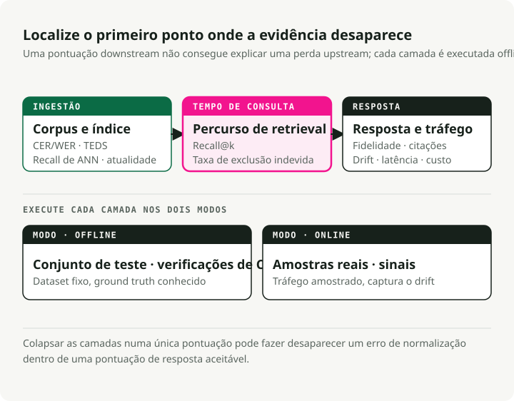
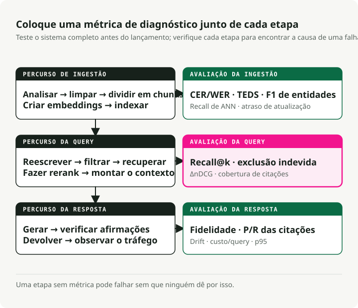
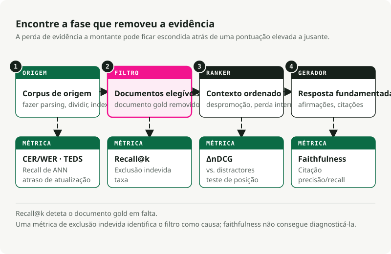

Tradução automática
Este artigo foi traduzido automaticamente a partir da versão original em inglês.
Avaliar RAG: Métricas para Cada Etapa de um Sistema RAG em Produção
Parte 1 da série Production RAG
Um sistema RAG com filtros partidos pode correr durante meses sem que ninguém dê por isso. O pipeline devolve respostas, os dashboards de latência continuam verdes, e o único sinal de que algo está errado é que as próprias respostas estão subtilmente erradas. “Subtilmente erradas” não ativa nenhum alerta.
Melhores logs não vão detetar isto. A avaliação vai, mas só se cobrir cada etapa do pipeline com a sua própria métrica. Este artigo é a referência que gostava de ter tido quando estava a perceber quais são as métricas que realmente importam.
Quer saltar à frente e correr código?
Empacotei as métricas deste artigo num repo complementar executável: slavadubrov/rag-evals-demo. make eval executa a suite completa — métricas de retrieval, híbrido + RRF, uplift de reranker, falsa exclusão por filtro, faithfulness, lost-in-the-middle, LLM-as-judge com mitigação de viés, latência — sobre o corpus SciFact. make benchmark faz sweep de chunking × embedding × LLM e escreve um relatório em markdown. Os notebooks 00–09 percorrem cada métrica individualmente; mesmo vocabulário deste artigo, números reais, sem Docker (Qdrant embebido).
TL;DR
- A avaliação define o sistema. Uma etapa sem métrica é uma etapa que falha em silêncio.
- Uma stack de avaliação útil cobre ingestão, retrieval, grounding da geração, conformidade com ontologias e sinais do sistema. RAGAS, TruLens, DeepEval, Arize Phoenix e a TREC 2024 RAG Track dão-lhe tooling. Não escolhem as suas métricas por si.
- Para RAG baseado em metadados e ontologias, a falha mais comum é o filtro silencioso. Uma tag errada ou um predicado hard frágil faz colapsar o recall para zero. O faithfulness pode continuar a parecer bom porque o modelo disse fielmente “não sei”.
Os artigos seguintes aprofundam secções individuais. Use este como índice.
Parte 1 — Porque Avaliar Primeiro
O sinal sénior
Num projeto RAG, o diagrama de arquitetura não deve ser o primeiro artefacto. O eval set deve.
Não pode escolher entre BM25 e dense retrieval, recursive e semantic chunking, ou Cohere Rerank e BGE até saber o que está a otimizar. “Melhores respostas” não é uma métrica. “Faithfulness ≥ 0.85 num golden set de 200 queries a cobrir as nossas três principais intenções, com latência p95 < 1.5s e taxa de falsa exclusão por filtro < 2%” é uma métrica.
Defina o harness antes de escrever o código de retrieval. O primeiro harness vai estar errado, e vai revê-lo. Rever uma métrica é muito mais barato do que rever um sistema que já colocou em produção.
Três camadas, não um único número
O RAG moderno é um pipeline, por isso a avaliação também tem de ser um pipeline. Nenhum número único deteta todos os modos de falha.
A avaliação em produção tem três camadas: offline (a base de conhecimento foi preparada corretamente?), online (foi encontrada e usada a evidência certa para esta query?), e pós-geração (a resposta é fiel e verificável?). Cada camada faz uma pergunta diferente. Se as colapsar num único score, pode falhar problemas básicos, como um bug de normalização que destrói o recall.

A mesma divisão também clarifica avaliação online vs. offline. Offline corre sobre um dataset fixo com ground truth conhecido. É reprodutível, barato de iterar e o sítio certo para seleção de componentes, comparações A/B e gates de CI. Online corre sobre tráfego real. Capta sinais que não consegue simular offline: regeneration rate, dwell time, thumbs e deriva real de queries. É ruidoso e mais difícil de instrumentar bem.
Precisa das duas. Só offline falha a deriva em produção. Só online torna as regressões difíceis de reproduzir. Fazer ambas dá mais trabalho, mas é a única configuração que lhe dá feedback útil antes e depois do lançamento.
Ao nível do componente vs. ponta a ponta
Há dois erros comuns. Avaliação só ponta a ponta diz-lhe que o sistema está partido, mas não onde. Avaliação só ao nível do componente pode mostrar todas as partes a passar enquanto o sistema completo continua a falhar. A solução é ter algumas métricas ponta a ponta de headline para decisões go/no-go, mais métricas de componente para diagnóstico. As métricas de retrieval apanham regressões do retriever. As métricas de geração apanham regressões do generator. A correção da resposta ponta a ponta apanha falhas de integração.
Os frameworks de referência (tour opinativo)
| Framework | Melhor em | Onde falha |
|---|---|---|
| RAGAS | Métricas RAG sem referência (faithfulness, answer relevancy, context precision/recall); o vocabulário de facto | Custo de LLM-judge; componentes do score opacos ao fazer debugging; defaults centrados em inglês |
| ARES | Juízes classificadores treinados por pipeline; menos anotações do que abordagens ao estilo RAGAS; alta precisão para sistemas próximos | Setup mais pesado; tem mesmo de treinar modelos |
| TruLens | Funções de feedback componíveis com forte explicabilidade; traces OpenTelemetry; adequado a produção | Menos batteries-included em métricas específicas de RAG do que RAGAS |
| DeepEval | Testes unitários ao estilo Pytest para outputs de LLM; G-Eval, métricas custom, CI/CD-native | Uso intensivo de LLM-judge = picos de custo |
| Arize Phoenix | Tracing forte e visualização de embeddings; deteta drift de embeddings visualmente; OTEL-native | As definições das métricas ficam por sua conta |
| TREC 2024 RAG Track | Benchmark público para nugget evaluation (AutoNuggetizer), support evaluation e fluency em MS MARCO Segment v2.1 | Não é uma ferramenta de runtime; é um benchmark para calibrar |
A minha stack por omissão é RAGAS para o vocabulário de métricas, DeepEval para gates de CI, Phoenix para tracing em produção, mais código custom para métricas específicas de ontologias. Vai ultrapassar qualquer coisa com que comece. Escolha o framework que torna métricas custom fáceis.
Para benchmarks, use BEIR (Thakur et al., NeurIPS 2021) para generalização zero-shot em retrieval, MTEB para qualidade geral de embeddings, MIRACL para retrieval multilingue e a TREC 2024 RAG Track para avaliação RAG ponta a ponta.
Parte 2 — O Pipeline com Pontos de Avaliação
Um sistema RAG em produção é maior do que “embed documents, retrieve chunks, call an LLM.” Todas as etapas entre a aquisição do documento e a entrega da resposta podem falhar.

Cada etapa no diagrama tem pelo menos uma métrica. Uma etapa sem métrica pode falhar sem que ninguém repare.
As três lanes correspondem a onde as falhas acontecem. A lane offline cobre tudo antes de existir uma query: parsing, cleaning, chunking, embedding, indexing. A lane online cobre tudo depois de chegar uma query: rewriting, retrieval, reranking, montagem do contexto. A lane pós-geração cobre verificações depois de o modelo escrever uma resposta: faithfulness, verificação de citações, sinais de drift e telemetria de produção.
Os erros acumulam-se ao longo da cadeia. Mau parsing limita o chunking. Mau chunking limita o retrieval. Mau retrieval limita o reranking. Mau reranking limita a geração. Faithfulness só mede a resposta final, nunca a causa a montante.
Parte 3 — Avaliação Offline da Ingestão
Muitas falhas de RAG em produção começam na ingestão. O sistema funciona em documentos de teste limpos e depois falha em PDFs reais, scans, tabelas e páginas de corpus desordenadas.
Aquisição e parsing de documentos
O que medir:
- Completude da extração de texto:
extracted_chars / expected_charsnuma amostra anotada, calculada por classe de documento. Não existe um package canónico — escreva um pequeno harness que compare o output do parser com uma referência limpa manualmente. Vigie notas de rodapé, cabeçalhos e legendas em falta. -
Precisão de OCR: CER (Character Error Rate) e WER (Word Error Rate), as métricas padrão de speech/OCR:
\[ \text{CER} = \frac{S + D + I}{N}, \qquad \text{WER} = \frac{S_w + D_w + I_w}{N_w} \]onde \(S\), \(D\), \(I\) são substituições, eliminações e inserções ao nível do carácter e \(N\) é a contagem de caracteres de referência (subscrito \(w\) para a versão por palavra). CER de 1–2% é bom para texto impresso; >10% é inutilizável. Para material manuscrito ou multilingue, ≤20% pode continuar a ser utilizável. Calcule com
jiwer(jiwer.cer(refs, hyps),jiwer.wer(refs, hyps)) ou HuggingFaceevaluate. Para corpora de avaliação, FUNSD e SROIE são os benchmarks públicos.from jiwer import cer, wer refs = ["Mars has two moons, Phobos and Deimos."] hyps = ["Mars has two m00ns, Phobos and Deirnos."] print(f"CER = {cer(refs, hyps):.3f}") # CER = 0.077 print(f"WER = {wer(refs, hyps):.3f}") # WER = 0.286 -
Fidelidade da extração de tabelas: TEDS (Tree-Edit-Distance-based Similarity) mede quão próxima está uma árvore HTML de tabela prevista da referência, normalizada pelo tamanho da árvore maior. De Zhong et al., 2020 (PubTabNet):
\[ \text{TEDS}(T_a, T_b) = 1 - \frac{\text{EditDist}(T_a, T_b)}{\max(|T_a|, |T_b|)} \]O TEDS usa tanto estrutura (linhas, colunas, spans) como conteúdo das células; TEDS-S remove o conteúdo e pontua apenas a estrutura. Implementação de referência:
teds.pydo PubTabNet (usaaptedpor baixo). Para corpora de avaliação, veja PubTabNet, FinTabNet e SciTSR. Parsers ingénuos falham frequentemente em tabelas; faça benchmark antes de confiar neles. -
Preservação de layout / estrutura: ordem dos headings, integridade das listas, ordem de leitura em PDFs com várias colunas. Use DocLayNet para um benchmark anotado; para comparar parsers prontos a usar,
unstructured,pymupdfe um parser VLM comodoclingcobrem a maior parte do espaço de desenho.
A minha opinião: faça benchmark de três parsers (uma baseline Tesseract, um modelo VLM-OCR e o candidato do seu fornecedor) sobre uma amostra estratificada de classes de documentos reais (scans limpos, fotos, páginas com muitas tabelas, multilingue, matemática, manuscrito) a DPI fixo. Reporte CER/WER por classe e TEDS para páginas com tabelas. Sem isso, está a adivinhar.
Limpeza e normalização
- Precisão da remoção de boilerplate: precision/recall face a spans de boilerplate anotados por humanos. Remoção agressiva mata conteúdo relevante; remoção preguiçosa polui embeddings. Ferramentas a comparar:
trafilatura,jusText,Resiliparse. Barbaresi (2021) faz benchmark direto entre estas ferramentas. - Normalização Unicode: percentagem de documentos que produzem outputs NFC e NFKC idênticos (calculados com a stdlib
unicodedata.normalize) é um sinal útil de drift. Incompatibilidades são a forma como zero-width joiners e caracteres visualmente semelhantes destroem o recall de retrieval. - Precisão da deteção de idioma: F1 numa amostra multilingue anotada. Crítico para índices multilingues. Use
fasttext-langdetect(olid.176da Facebook),lingua-pyoucld3; FLORES-200 é o benchmark padrão para línguas de poucos recursos. -
Efetividade da deduplicação (MinHash / LSH): precision/recall do seu detetor de near-duplicate face a um conjunto anotado manualmente. A ideia subjacente: estimar a similaridade de Jaccard \(J(A, B) = \frac{|A \cap B|}{|A \cup B|}\) entre conjuntos de shingles de documentos via \(k\) hashes de permutação aleatória (Broder, 1997) e agrupar near-duplicates com LSH banding (Indyk & Motwani, 1998). MinHash padrão com 128 funções de hash e LSH banding ajustado para um limiar de Jaccard de 0.7–0.85 é a escolha por omissão; faça benchmark nos seus dados porque o limiar certo depende do corpus. Acompanhe a taxa de false-merge (corrompe respostas) em separado da taxa de missed-merge (desperdiça espaço no índice).
datasketché o package Python canónico:from datasketch import MinHash, MinHashLSH def shingles(text: str, k: int = 5) -> set[str]: text = text.lower() return {text[i:i + k] for i in range(len(text) - k + 1)} def to_minhash(text: str, num_perm: int = 128) -> MinHash: m = MinHash(num_perm=num_perm) for s in shingles(text): m.update(s.encode("utf-8")) return m docs = { "d1": "Mars has two moons, Phobos and Deimos.", "d2": "Mars has two moons, Phobos and Deimos!", # near-dup "d3": "Curiosity rover landed on Mars in 2012.", } lsh = MinHashLSH(threshold=0.8, num_perm=128) for did, text in docs.items(): lsh.insert(did, to_minhash(text)) print(lsh.query(to_minhash(docs["d1"]))) # ['d1', 'd2'] -
Remoção de PII: precision e recall, calculados separadamente por tipo de entidade (emails, SSNs, nomes, moradas). Erros de recall criam risco de compliance; erros de precision prejudicam a qualidade da resposta. Defina o operating point com a equipa jurídica. Ferramentas: Microsoft Presidio (a mais completa),
scrubadubou um modelo NER fine-tuned sobre um conjunto anotado.
Chunking — a etapa que decide silenciosamente o retrieval
Chunking é uma das decisões de maior impacto em RAG. A estratégia errada pode produzir uma diferença de vários pontos de recall com os mesmos embeddings. Os benchmarks de 2024 da NVIDIA deram ao chunking ao nível da página a maior precisão com a menor variância para documentos paginados; semantic chunking (agrupar frases adjacentes por similaridade de embeddings e cortar em fronteiras dissimilares — implementado em SemanticChunker da LangChain e SemanticSplitterNodeParser da LlamaIndex) pode melhorar o recall face a fixed-window chunking; recursive character splitting (tentar primeiro quebras de parágrafo, depois de frase, depois de palavra, até cada chunk caber no tamanho alvo — ver RecursiveCharacterTextSplitter da LangChain) em 400–512 tokens com 10–20% de overlap continua a ser uma boa escolha por omissão para texto geral.
Métricas a acompanhar:
- Coerência dos chunks: \(\\text{coherence} = \\overline{\\cos(s_i, s_j)}_{\\text{within}} - \\overline{\\cos(s_i, s_j)}_{\\text{across boundary}}\), onde \(s_i\) são embeddings de frases. Chunks saudáveis são internamente semelhantes e dissemelhantes na fronteira. Calcule com
sentence-transformersmaisscikit-learne o seucosine_similarity. - Qualidade das fronteiras: “isto é um corte sensato?” anotado por humanos numa amostra, mais uma verificação estrutural de que os chunks não partem tabelas, listas ou secções numeradas (o bug de produção mais comum).
- Tamanho ótimo do chunk: faça sweep de tamanhos em tokens (128, 256, 512, 1024) e trace Recall@k vs. tamanho no seu golden set. Escolha o joelho da curva. Não escolha o que o tutorial disse.
- Efetividade do overlap: faça ablação da fração de overlap (0%, 10%, 20%, 30%) e meça Recall@k. Retornos decrescentes para lá de ~20% na maioria dos corpora.
- Fidelidade da atribuição do chunk: percentagem de chunks que retêm um apontador de origem verificável (número de página, âncora de secção, doc ID). A auditabilidade exige isto.
- Late vs. early chunking: late chunking (Günther et al., 2024) faz embedding do documento completo e só depois segmenta, preservando contexto global (implementação de referência em
jina-embeddings-v3). Contextual Retrieval (Anthropic, 2024) prependa contexto gerado por LLM a cada chunk. Ambos aumentam o custo. Faça benchmark no seu corpus antes de adotar qualquer um deles.
A minha opinião: structural chunking (dividir por headings, tabelas e secções — implementado por parsers como unstructured.io ou percorrendo a AST que o seu parser já produziu) é subutilizado. Se os seus documentos têm estrutura, use-a antes de adicionar heurísticas de similaridade. Recursive character splitting é a baseline; semantic chunking justifica o overhead sobretudo em prosa não estruturada.
Extração e enriquecimento de metadados
- NER precision/recall/F1: por tipo de entidade, num subconjunto anotado. Padrão CoNLL/MUC. Calcule com
seqeval(from seqeval.metrics import f1_scorepara a versão aware de tags BIO/IOB), ou scikit-learn para comparações de conjuntos de spans. CoNLL-2003 e OntoNotes 5.0 são os corpora canónicos de referência. - Relation extraction F1: ainda mais importante para sistemas baseados em ontologias. Anote manualmente 200 documentos. TACRED e DocRED são os benchmarks públicos; para código de produção, os pipelines de relações
opennreespaCysão pontos de partida razoáveis. - Precisão da extração de títulos / headings: exact-match mais similaridade de Levenshtein normalizada (\(1 - \\frac{\\text{edit\\_dist}(a, b)}{\\max(|a|, |b|)}\)) face ao ground truth —
python-Levenshteinourapidfuzzdão ambas numa só chamada. - Preservação de metadados hierárquicos: percentagem de chunks que retêm corretamente a sua secção pai, documento pai e caminho de ancestralidade. Esta é a métrica que decide se o seu RAG consegue responder a perguntas do tipo “o que diz o filho da policy X?”.
Geração de embeddings
- Benchmarks de seleção de modelo: MTEB para capacidade geral (nDCG@10 é a métrica principal; o package Python do MTEB permite reproduzir localmente a leaderboard), BEIR para generalização zero-shot, MIRACL para multilingue. Os melhores modelos de retrieval agrupam-se numa faixa estreita de nDCG@10, mas scores MTEB em inglês preveem mal o desempenho em línguas com menos recursos.
- Avaliação específica de domínio: não confie em benchmarks gerais para corpora de domínio. Construa um golden set de domínio com 200–500 pares query/doc e re-rank dos modelos candidatos nele com
ranxoupytrec_eval. Vi repetidamente um modelo em #5 no MTEB bater um modelo em #1 por mais de 15 pontos num domínio específico. - Deteção de drift de embeddings: acompanhe KL distribucional ou drift baseado em modelo entre uma janela de referência fixa e embeddings de produção em rolling; estabilidade de nearest-neighbor para um probe set fixo é o sinal prático mais simples.
evidentlyealibi-detectimplementam ambos detetores de drift estatísticos e baseados em modelo. O estudo comparativo da Evidently favorece deteção de drift baseada em modelo como default. - Multi-vector vs. single-vector: late-interaction (ColBERT / ColBERTv2 — ver Khattab & Zaharia, 2020; implementações de referência em RAGatouille e PyLate) normalmente ganha fora de domínio com um custo de armazenamento 6–10× superior (com compressão ao estilo PLAID; sem compressão é bastante maior). Vale a pena quando o seu corpus está longe da distribuição de treino do modelo de embedding. Caso contrário, mantenha single-vector.
Construção do índice
- Recall@k sob aproximação: compare o índice approximate-nearest-neighbour (ANN) com uma baseline exata brute-force ao mesmo k — em FAISS, isso é
IndexHNSWFlat(ouIndexIVFFlat) vs.IndexFlatIP/IndexFlatL2. Aponte para ≥95% recall@10 vs. flat. O projetoann-benchmarksacompanha curvas de Pareto recall–QPS entre bibliotecas. - Tuning de HNSW: HNSW (Hierarchical Navigable Small World — um grafo de proximidade em camadas; ver Malkov & Yashunin, 2018, implementado em
hnswlib, noIndexHNSWFlatdo FAISS e na maioria das vector DBs) expõe três parâmetros:M(fan-out do grafo),efConstruction(largura de candidatos em build-time),efSearch(largura de candidatos em query-time). Defaults pragmáticos: M=16–32, efConstruction=150, efSearch a começar em 100 e afinado para cima até o recall estabilizar. Um dataset com 10M vetores e efSearch=500 pode atingir 98% de recall em 5ms; efSearch=100 desce para 85% em 1ms. Escolha o ponto de recall que o seu eval set exige. - Tuning de IVF: IVF (índice Inverted File — particiona vetores com k-means em
nlistcélulas, depois em query-time percorre asnprobecélulas mais próximas; verIndexIVFFlateIndexIVFPQdo FAISS). Usenlist≈ √N como heurística inicial e ajustenprobeem runtime. IVF lida geralmente de forma mais eficiente com pesquisa filtrada do que HNSW, o que importa para sistemas baseados em ontologias com muitos predicados de metadados. - Lag de frescura das atualizações: tempo desde o commit do documento até ficar retrievável. Acompanhe p50 e p99. Para sistemas com requisitos regulamentares, acompanhe também a percentagem de queries servidas contra índices desatualizados.
Parte 4 — Avaliação Online da Inferência
A lane online é onde vive a maioria das métricas de produção. Muitas equipas ficam-se por Recall@k. Isso não chega.
Compreensão e rewriting da query
- Qualidade da expansão da query: uplift de Recall@k no seu golden set, query expandida vs. query bruta. Se não for pelo menos +5% em queries difíceis, o seu expander está a prejudicar mais do que ajuda. Baselines clássicas de PRF (pseudo-relevance feedback) como RM3 e Bo1 continuam úteis como sanity checks; expansão baseada em LLM tem de as bater.
- Avaliação de HyDE: HyDE (Gao et al., 2022) gera uma resposta hipotética com o LLM, faz embedding dela e faz retrieval sobre isso — uma ferramenta útil que acrescenta latência e uma superfície de alucinação. Avalie pelo uplift de Recall@10 em queries fora de domínio (onde brilha) e confirme que não há degradação em queries dentro do domínio (onde pode prejudicar). Use como fallback quando a confiança do retrieval é baixa, não como default. Ancore com um cross-encoder reranker a jusante para validar retrievals conduzidos por hipóteses.
- Geração multi-query: união de Recall@k de N rewrites vs. query única. Retornos decrescentes para lá de 3–4 rewrites. Implementações:
MultiQueryRetrieverda LangChain,QueryFusionRetrieverda LlamaIndex. - Precisão da classificação de intenção: standard precision/recall/F1 por intenção (calcule com
sklearn.metrics.classification_report), mas a métrica operacional é a correção do routing — o pipeline downstream correto é invocado? - Routing adaptativo: Adaptive-RAG (Jeong et al., NAACL 2024) defende que nem todas as queries merecem a mesma estratégia de retrieval. Acompanhe a precisão do router como problema de classificação face a um conjunto anotado de “não precisa de retrieval / one-shot / iterativo”.
Métricas de retrieval
Estas são as métricas base. Se não as acompanhar, não consegue dizer se o retrieval está a melhorar.
| Métrica | O que mede | Quando usar |
|---|---|---|
| Recall@k | percentagem de queries em que algum doc relevante está no top k | a métrica de retrieval mais importante para RAG; se for baixa, nada a jusante importa |
| Precision@k | percentagem do top-k que é relevante | útil quando a janela de contexto é o bottleneck |
| MRR | média de 1/rank do primeiro doc relevante | quando os utilizadores só olham para o top-1 ou top-3 |
| nDCG@k | ganho com desconto por posição ponderado por graus de relevância | métrica de retrieval padrão para relevância graduada |
| MAP | média, por queries, da average precision | quando se preocupa com a lista ordenada inteira |
| Hit Rate@k | versão binária de Recall@k | métrica rápida de sanidade |
| Coverage | percentagem de golden docs alguma vez recuperados em todas as queries | apanha lacunas sistemáticas no índice |
As fórmulas, para referência (relevância binária com conjunto relevante \(R_q\) para a query \(q\), e \(\\text{rel}_i = 1\) se o \(i\)-ésimo doc recuperado estiver em \(R_q\)):
Para relevância graduada, \(\\text{rel}_i \\in \\{0, 1, 2, \\dots\\}\); nDCG binário é o caso especial usado no código abaixo. MAP é a média, por queries, de \(\\text{AP}_q = \\frac{1}{|R_q|}\\sum_{i: \\text{rel}_i = 1} \\text{Precision@}i\). Veja Manning, Raghavan, Schütze, Introduction to Information Retrieval, capítulo 8, para as derivações.
Para código de produção, use ranx, pytrec_eval ou ir_measures — implementam toda a família de métricas TREC e tratam corretamente a relevância graduada. Objetivos iniciais razoáveis: Recall@10 ≥ 0.85, MRR ≥ 0.6, nDCG@10 ≥ 0.7. Devem ser definidos contra um golden set realista, não copiados de um tutorial.
O harness de teste para isto é curto. Pode corrê-lo a partir de um notebook antes sequer de ter escolhido uma vector database.
from math import log2
from statistics import mean
# synthetic gold set: query_id -> set of relevant doc ids
gold = {
"q1": {"d3"},
"q2": {"d7", "d2"},
"q3": {"d11"},
"q4": {"d5"},
}
# ranked retrieval results: query_id -> ranked list of doc ids (top-10)
runs = {
"q1": ["d8", "d3", "d1", "d4", "d2", "d9", "d6", "d10", "d12", "d13"],
"q2": ["d2", "d6", "d4", "d7", "d1", "d3", "d8", "d11", "d5", "d9"],
"q3": ["d11", "d2", "d3", "d4", "d1", "d6", "d7", "d8", "d10", "d12"],
"q4": ["d1", "d2", "d3", "d6", "d8", "d9", "d10", "d12", "d13", "d14"],
}
def recall_at_k(ranked, gold_set, k):
if not gold_set:
return 0.0
hit = sum(1 for d in ranked[:k] if d in gold_set)
return hit / len(gold_set)
def reciprocal_rank(ranked, gold_set):
# MRR contribution per query: 1/rank of the first relevant doc.
for rank, d in enumerate(ranked, start=1):
if d in gold_set:
return 1.0 / rank
return 0.0
def ndcg_at_k(ranked, gold_set, k):
# binary relevance: rel ∈ {0, 1}
gains = [1.0 if d in gold_set else 0.0 for d in ranked[:k]]
dcg = sum(g / log2(i + 2) for i, g in enumerate(gains))
# ideal DCG: all gold docs ranked first, capped by k
n_gold_in_topk = min(k, len(gold_set))
idcg = sum(1.0 / log2(i + 2) for i in range(n_gold_in_topk))
return dcg / idcg if idcg else 0.0
K = 5
print(f"Recall@{K}: {mean(recall_at_k(runs[q], gold[q], K) for q in gold):.3f}")
print(f"MRR: {mean(reciprocal_rank(runs[q], gold[q]) for q in gold):.3f}")
print(f"nDCG@{K}: {mean(ndcg_at_k(runs[q], gold[q], K) for q in gold):.3f}")
# Recall@5: 0.750
# MRR: 0.625
# nDCG@5: 0.627
Esse é o seu gate de CI para retrieval. Ligue-o a um golden set de 200 queries e corra-o em cada PR. Se um dos três números regredir, bloqueie o merge e corrija a regressão.
O repo complementar fixa exatamente os números acima (Recall@5 = 0.750, MRR = 0.625, nDCG@5 = 0.627) como teste unitário em tests/test_retrieval_metrics.py; o notebook 01 faz sweep de Recall@k / MRR / nDCG sobre um índice real do SciFact, e o harness com formato de produção vive em evaluation/retrieval.py.
Retrieval híbrido e reciprocal rank fusion
BM25 (o scorer lexical esparso clássico de Robertson & Walker, 1994 — exact-term matching com ponderação tipo TF-IDF e normalização por comprimento, disponível em rank_bm25, Elasticsearch/OpenSearch e na maioria dos motores de pesquisa) mais fusão densa via Reciprocal Rank Fusion (Cormack, Clarke, Buettcher, SIGIR 2009) com k=60 é uma escolha forte por omissão. O RRF é agnóstico ao score, por isso evita os problemas de normalização de score que vêm com interpolação linear. Se tiver 50+ pares de query anotados, experimente combinação convexa e ajuste α. Híbrido mais um cross-encoder reranker bate normalmente retrieval denso-only ou esparso-only em corpora técnicos, ao estilo logs, e código. Em corpora fortemente semânticos, o ganho pode ser pequeno. Meça nos seus dados; uma má configuração de fusão pode ficar abaixo de dense-only.
A implementação cabe em poucas linhas.
from collections import defaultdict
# two retrieval lanes: dense embeddings and BM25.
dense = ["d3", "d7", "d1", "d4", "d2", "d9", "d10"]
sparse = ["d2", "d3", "d8", "d1", "d11", "d4", "d6"]
def rrf(rankings: list[list[str]], k: int = 60) -> list[tuple[str, float]]:
"""Reciprocal Rank Fusion (Cormack et al., SIGIR 2009).
score(d) = sum over rankings of 1 / (k + rank(d))
Score-agnostic: only rank position matters. k=60 is the canonical default.
"""
scores: dict[str, float] = defaultdict(float)
for ranking in rankings:
for rank, doc in enumerate(ranking, start=1):
scores[doc] += 1.0 / (k + rank)
return sorted(scores.items(), key=lambda kv: kv[1], reverse=True)
fused = rrf([dense, sparse], k=60)
for doc, score in fused[:5]:
print(f"{doc} score={score:.5f}")
# d3 score=0.03252 <- rank 1 dense, rank 2 sparse
# d2 score=0.03178 <- rank 5 dense, rank 1 sparse
# d1 score=0.03150
Note o que o RRF não faz: nunca olha para os scores brutos de similaridade. Um dense retriever que devolve cosine 0.98 e uma lane BM25 que devolve score 17.4 não são diretamente comparáveis. Se os normalizar com z-scores ou min-max scaling, pode acabar por favorecer a lane com a maior variância nesse batch.
O RRF usa apenas rank. Se um retriever põe um documento na posição 2, esse voto vale 1 / (60 + 2), independentemente do score bruto que o produziu.
Híbrido + RRF em SciFact: o notebook 02 compara dense vs BM25 vs RRF com deltas por query. O fuser em formato de produção está em retrieval/hybrid_rrf.py; tests/test_rrf.py fixa a ordenação canónica d3 / d2 / d1 em k=60.
Reranking
- ΔnDCG / ΔMRR: a única métrica honesta para reranker — uplift face a não rerankear, no seu golden set, à profundidade que a sua aplicação realmente usa. Calcule correndo as suas métricas de retrieval com e sem o reranker sobre conjuntos de candidatos idênticos.
- Cross-encoder vs. bi-encoder: um bi-encoder faz embedding da query e do doc independentemente (um vetor por lado) e pontua por dot product; um cross-encoder concatena query+doc e corre um único forward pass que atende conjuntamente aos dois. Cross-encoders ganham quase sempre em relevância, ao custo de um forward pass por candidato. Implementação de referência:
sentence-transformersCrossEncoder. Em benchmarks publicados, BGE-reranker-v2-m3 atinge ~80ms por 100 candidatos em GPU e ~350ms em CPU, e iguala Cohere Rerank em qualidade sem custo recorrente. Trate os números como ordens de grandeza — o seu hardware e tamanho de batch vão alterá-los. - Listwise vs. pointwise: pointwise pontua cada par (query, doc) independentemente; listwise pontua a lista completa de candidatos em conjunto para que o modelo possa otimizar diretamente um objetivo de ranking. Listwise (BGE, ZeRank-2 com outputs calibrados) ganha geralmente em nDCG; pointwise é mais fácil de thresholdar. As probabilidades calibradas do ZeRank-2 permitem usar thresholds simples de
score > 0.7; scores brutos de BGE/MiniLM precisam de tuning por corpus.
from sentence_transformers import CrossEncoder
reranker = CrossEncoder("BAAI/bge-reranker-v2-m3")
query = "How do I rotate database credentials in production?"
candidates = [
"Production database credentials are rotated via Vault every 30 days.",
"The new logo was unveiled at the all-hands meeting.",
"To rotate prod DB creds, run the `rotate-secrets` GitHub Action.",
]
scores = reranker.predict([(query, c) for c in candidates])
ranked = sorted(zip(candidates, scores), key=lambda x: -x[1])
for doc, score in ranked:
print(f"{score:+.3f} {doc}")
Um reranker é frequentemente a adição de maior valor a um pipeline RAG básico. Na maioria dos corpora que vi, adicionar um move Precision@1 em 15–40%. Se o seu RAG não tiver um, adicione-o antes de gastar tempo em tweaks menores de retrieval.
ΔnDCG e ΔPrecision@1 de um cross-encoder em SciFact: notebook 03; módulo: retrieval/reranker.py.
Construção de contexto e lost-in-the-middle
É aqui que vêm muitas falhas de “bom retrieval, má resposta”.
- Relevância do contexto: score de relevância por chunk de RAGAS
ContextRelevancyou de um cross-encoder, agregado como média e como percentagem de chunks abaixo de um limiar. - Utilização do contexto: dos chunks colocados no contexto, quantos foram realmente citados ou usados na resposta. Calcule como \(\\frac{|\\text{cited chunks}|}{|\\text{retrieved chunks}|}\) numa amostra anotada. Baixa utilização (< 30%) significa que está a pagar por tokens de que não precisa.
- Deteção de lost-in-the-middle: eval sintético em que coloca o gold chunk nas posições {primeiro, meio, último} de um contexto longo e mede a correção da resposta. A degradação em U é real e está documentada em Liu et al. (TACL 2023). Os modelos modernos comportam-se melhor do que os de 2023, mas o viés persiste. Mitigações: rerankear e depois reordenar o top-k para que o chunk com maior score fique em primeiro ou último (a
LongContextReorderda LangChain faz exatamente isto), ou comprimir agressivamente os chunks do meio. Meça com um eval estratificado por posição, não apenas com um score agregado. Um eval estratificado por posição, trabalhado e executável, está no notebook 06 (módulo:evaluation/lost_in_middle.py). - Compressão de contexto: reporte a taxa de compressão (tokens de entrada / tokens de saída) juntamente com a correção da resposta. Ferramentas:
ContextualCompressionRetrieverda LangChain, LongLLMLingua. Se a compressão reduzir a correção em mais de 2 pontos, foi longe de mais.
Parte 5 — A Taxa de Falsa Exclusão por Filtro
Esta métrica tem uma secção própria porque a maioria das equipas a ignora, e ela causa falhas reais em produção.
Um filtro hard de metadados como tenant_id = X AND product = Y AND locale = en-US pode reduzir o recall efetivo a zero sem alterar as métricas padrão de retrieval. O gold doc é excluído antes de o ranking começar. Recall@k é calculado sobre o conjunto de candidatos sobreviventes, por isso pode parecer bom. Faithfulness é calculado contra o contexto recuperado, por isso também pode parecer bom; o modelo disse fielmente “não sei”.
O ramo vermelho na árvore é a falha comum: o documento certo existe, mas o filtro remove-o antes do retrieval.

A métrica
filter_false_exclusion_rate =
(# queries where gold doc was excluded by metadata filter) /
(# queries with at least one gold doc)
Para a calcular, precisa de (a) doc IDs de ground-truth para cada query de avaliação e (b) instrumentação que registe os predicados de filtro aplicados, não apenas os resultados finais. Um objetivo razoável é < 2% em tráfego de produção. Se a taxa for mais alta, a sua lógica de filtro está a destruir o recall.
Aqui está uma implementação funcional que também ilustra porque é que a falha é invisível a um harness de retrieval escrito de forma ingénua.
# A small worked example that drops recall to zero silently.
docs = [
{"id": "d1", "tenant": "acme", "locale": "en-US"},
{"id": "d2", "tenant": "acme", "locale": "en-GB"},
{"id": "d3", "tenant": "globex", "locale": "en-US"},
{"id": "d4", "tenant": "acme", "locale": "en-US"},
{"id": "d5", "tenant": "acme", "locale": "de-DE"},
]
queries = [
# the gold doc lives in en-GB but the dynamic filter forced en-US
{"qid": "q1", "gold": {"d2"}, "filter": lambda d: d["locale"] == "en-US"},
# the gold doc is correctly within the tenant filter
{"qid": "q2", "gold": {"d4"}, "filter": lambda d: d["tenant"] == "acme"},
# the gold doc is in a different tenant — silently dropped
{"qid": "q3", "gold": {"d3"}, "filter": lambda d: d["tenant"] == "acme"},
# the gold doc passes the filter (de-DE locale match)
{"qid": "q4", "gold": {"d5"}, "filter": lambda d: d["locale"] == "de-DE"},
]
def filter_false_exclusion_rate(queries, docs):
n_with_gold, n_excluded = 0, 0
for q in queries:
if not q["gold"]:
continue
n_with_gold += 1
survivors = {d["id"] for d in docs if q["filter"](d)}
if not (q["gold"] & survivors):
n_excluded += 1
return n_excluded / n_with_gold if n_with_gold else 0.0
rate = filter_false_exclusion_rate(queries, docs)
print(f"filter_false_exclusion_rate = {rate:.2%}")
# filter_false_exclusion_rate = 50.00%
# The trap: a recall harness that only iterates over the SURVIVORS will
# either skip the empty-gold queries or report perfect recall on a doomed set.
def naive_recall_over_survivors(queries, docs, k=10):
recalls = []
for q in queries:
survivors = [d for d in docs if q["filter"](d)][:k]
survivor_ids = {d["id"] for d in survivors}
denom = len(q["gold"] & {d["id"] for d in docs})
if denom == 0:
continue # silently drops the query
visible_gold = q["gold"] & survivor_ids
recalls.append(len(visible_gold) / denom)
return sum(recalls) / len(recalls) if recalls else 0.0
print(f"naive recall (filtered universe) = {naive_recall_over_survivors(queries, docs):.2%}")
# naive recall (filtered universe) = 50.00%
assert rate == 0.5
Metade das queries perde o seu gold doc por causa do filtro. O harness ingénuo de recall reporta 50% e você culpa o retriever. A taxa de exclusão mostra o problema real: isto é um bug no predicado. Duas queries tiveram a resposta removida antes de o retriever correr. Nenhum modelo consegue recuperar um documento que foi filtrado.
A taxa de 50% acima é reproduzida como teste unitário no repo complementar: tests/test_filter_exclusion.py::test_50_percent_exclusion_rate. O Notebook 04 corre isto em SciFact com metadados sintéticos para que possa ver um filtro real a reduzir o recall a zero; a métrica de runtime (com precision/recall do predicado como métrica complementar) está em evaluation/filter_exclusion.py.
Métrica complementar: precision e recall do predicado
Quando o filtering é dinâmico (por exemplo, um LLM extrai predicados de filtro a partir da query), trate o extrator de predicados como um modelo de classificação e avalie-o como tal. Predicate precision/recall contra um conjunto anotado de pares (query, predicado correto). Se o seu extrator estiver errado 8% das vezes e aplicar filtros hard, tem um teto rígido para o recall em torno de 92%, e nenhum reranking ajuda.
Soft boost vs. hard filter
Esta métrica obriga a uma decisão de desenho. Use hard filters quando a correção é binária: jurisdição legal, fronteiras de ACL, publicado-vs-rascunho. Use soft boosts quando a relevância é graduada: preferência de locale, recência, versão. Sem medir a taxa de exclusão, a escolha errada é difícil de ver.
A regra de decisão, mensurável:
For each filter predicate F:
hard_recall_F = retrieval_recall@k with F as a hard filter
soft_recall_F = retrieval_recall@k with F as a +0.X rerank boost
hard_precision = relevant_in_top_k / k under hard filter
soft_precision = relevant_in_top_k / k under soft boost
exclusion_rate = % of queries where the gold doc was filtered out (hard)
Use hard filter only if exclusion_rate < ε AND hard_precision >> soft_precision.
Otherwise prefer soft boost.
ε no intervalo de 1–2% é razoável; mais baixo em domínios de alto risco. Um artigo dedicado nesta série aprofunda melhor este trade-off.
Parte 6 — Avaliação da Geração
As métricas de retrieval dizem-lhe que o sistema poderia responder corretamente. Não lhe dizem que o fez. As métricas de geração cobrem essa lacuna.
Faithfulness e groundedness
O faithfulness do RAGAS decompõe a resposta em atomic claims (afirmações factuais curtas e autocontidas), depois verifica cada uma contra o contexto recuperado através de um juiz LLM:
A percentagem de claims suportadas é o score. A estrutura é mais útil do que qualquer número isolado, porque lhe diz quais claims não estão suportadas. O código de produção vive no package ragas — o uso é assim:
from datasets import Dataset
from ragas import evaluate
from ragas.metrics import faithfulness, answer_relevancy, context_precision
samples = Dataset.from_dict({
"question": ["How many moons does Mars have?"],
"answer": ["Mars has two moons, Phobos and Deimos."],
"contexts": [["Mars has two moons named Phobos and Deimos."]],
"ground_truth": ["Mars has two moons."],
})
result = evaluate(samples, metrics=[faithfulness, answer_relevancy, context_precision])
print(result)
Em baixo está o mesmo loop expandido com um juiz determinístico substituto para que possa ver a forma ponta a ponta.
def extract_claims(answer: str) -> list[str]:
# Production: an LLM call that decomposes the answer.
# Demo: split on sentence-final punctuation.
return [c.strip() for c in answer.replace("?", ".").replace("!", ".").split(".") if c.strip()]
def verify_claim(claim: str, context: str) -> bool:
# Production: an NLI (natural-language inference) model or LLM judge.
# Demo: a deterministic stand-in so the example runs offline.
entailed_pairs = {
"Mars has two moons": True,
"Phobos and Deimos orbit Mars": True,
"Mars has a thick atmosphere": False, # unsupported by context
"Curiosity landed in 2012": True,
}
for k, v in entailed_pairs.items():
if k.lower() in claim.lower() or claim.lower() in k.lower():
return v
words = [w.lower() for w in claim.split() if len(w) > 3]
return all(w in context.lower() for w in words) if words else False
context = (
"Mars has two moons, Phobos and Deimos. NASA's Curiosity rover "
"landed on Mars in 2012."
)
answer = (
"Mars has two moons. Phobos and Deimos orbit Mars. "
"Mars has a thick atmosphere. Curiosity landed in 2012."
)
claims = extract_claims(answer)
verdicts = [(c, verify_claim(c, context)) for c in claims]
faithfulness = sum(1 for _, ok in verdicts if ok) / len(verdicts)
for c, ok in verdicts:
print(f" [{'✓' if ok else '✗'}] {c}")
print(f"faithfulness = {faithfulness:.2f}")
# faithfulness = 0.75 (one unsupported claim about the atmosphere)
A estrutura importa. Em produção, verify_claim torna-se um modelo NLI ou uma chamada a LLM. O resto do harness mantém-se igual: extrair, verificar, agregar.
Extração de claims + verificação ponta a ponta sobre respostas geradas em SciFact: notebook 05; módulo: evaluation/faithfulness.py. O repo também corre um verificador estilo HHEM entre famílias no mesmo loop para que possa ver qual a família de juízes que concorda com qual.
Uma alternativa purpose-built a LLM-as-judge é HHEM-2.1-Open (Hughes Hallucination Evaluation Model, Vectara), um classificador de 600 MB fine-tuned para deteção de alucinações. O threshold por omissão costuma ser 0.5 (>0.5 = factual, ≤0.5 = alucinado), mas calibre no seu próprio conjunto anotado. Corre em CPU e, segundo reportes, supera juízes LLM genéricos em AggreFact e RAGTruth. As versões comerciais mais recentes HHEM-2.3 e FaithJudge estão na fronteira atual de Pareto na leaderboard da Vectara. Refaça benchmark antes de se comprometer; as leaderboards derivam.
Avaliação por factos atómicos
O FActScore (Min et al., EMNLP 2023) decompõe gerações longas em factos atómicos, faz retrieval de evidência por facto, anota cada um como supported / not-supported e reporta a fração suportada:
Implementação de referência: shmsw25/FActScore. Funciona bem para biografias, resumos e outros outputs long-form. Atenção: factos triviais repetitivos podem inflacionar o score, e ataques “MontageLie” (factos verdadeiros em ordem enganadora) podem derrotá-lo. VeriScore lida com claims com modificadores necessários; o filtro Core ajuda a evitar fact-padding.
Precisão de citações
Acompanhe citation precision (spans citados suportam de facto a claim) e citation recall (claims que deviam ser citadas, são-no):
A support evaluation da TREC 2024 RAG Track é o padrão académico. Upadhyay et al. (SIGIR 2025) reportam GPT-4o a concordar com juízes humanos 56% das vezes em avaliação manual feita de raiz, subindo para 72% com pós-edição de previsões do LLM. Isto é útil como multiplicador de força, não como substituto da avaliação humana em contextos de alto risco. Para uma aproximação automatizada, ALCE (Gao et al., EMNLP 2023) implementa citation precision/recall com verificação baseada em NLI.
Correção da resposta, completude, recusa
- Correção da resposta vs. ground truth: quando o tiver, exact match ou token-F1 para tarefas de resposta curta (
evaluate.load("squad")), similaridade semântica para respostas abertas (bert-score, embedding cosine viasentence-transformers, ouAnswerCorrectnessdo RAGAS). - Completude via nuggets: um “nugget” é uma única peça atómica de informação que qualquer resposta correta tem de conter (por exemplo, para “Quando foi fundada a empresa?” os nuggets podem ser
{year: 1994, founder: Jane Doe}). O AutoNuggetizer da TREC extrai os gold nuggets de uma resposta correta a partir de uma referência e depois pontua que fração o sistema cobre — forte correlação com avaliação manual em 21 tópicos × 45 runs na TREC 2024. - Comportamento de recusa: queries sem resposta no corpus devem produzir abstenção, não alucinação. Acompanhe abstention precision (recusas que estavam corretas) e abstention recall (queries fora do âmbito que provocaram recusa). NoMIRACL é o benchmark público; no seu próprio domínio, anote um subconjunto de queries fora do âmbito e acompanhe a precisão da abstenção.
Verificação pós-geração
Os ganhos mais baratos de fiabilidade vêm muitas vezes de pós-verificações determinísticas, não de modelos maiores.
- Verificação de grounding de entidades: cada entidade nomeada na resposta tem de aparecer no contexto recuperado (ou ser derivável dele). Uma verificação simples regex + exact-match (ou o
entsdospaCycontra uma string de contexto normalizada) apanha uma fração surpreendente de alucinações. - Verificação de claims: extraia claims, corra NLI contra o contexto, falhe ou sinalize qualquer uma abaixo do limiar. Modelos NLI-as-faithfulness:
cross-encoder/nli-deberta-v3-large,MoritzLaurer/DeBERTa-v3-large-mnli-fever-anli-ling-wanli. Acrescenta latência. Vale a pena para domínios de alto risco. - Self-consistency (Wang et al., ICLR 2023): amostre N=5 gerações com temperatura > 0; reporte a taxa de concordância (por exemplo, proporção de gerações que coincidem com a resposta modal, ou BERTScore par-a-par); sinalize respostas com baixa concordância para revisão humana.
- Calibração de confiança: recolha confiança verbalizada (“Quão confiante estás, 0–1?”) e compare com a correção real no eval set. Trace uma curva de calibração e reporte Expected Calibration Error: \(\\text{ECE} = \\sum_{m=1}^{M} \\frac{|B_m|}{n} |\\text{acc}(B_m) - \\text{conf}(B_m)|\), onde \(B_m\) são bins de confiança. Implementações:
netcal,torchmetrics.CalibrationError. Um modelo que diz 0.9 deveria acertar 90% das vezes. Quase nunca acontece.
Parte 7 — Avaliação de RAG Baseado em Ontologias
As métricas padrão acima cobrem RAG de corpus aberto. Sistemas baseados em ontologias precisam de mais. Se o seu RAG faz retrieval sobre uma ontologia estruturada, taxonomia ou knowledge graph (produtos num catálogo, condições em SNOMED, componentes numa BOM, técnicas de segurança em MITRE ATT&CK), as métricas RAG padrão são necessárias mas insuficientes. Também precisa de medir a camada da ontologia.
Precisão de entity linking
A primeira tarefa é mapear uma menção na query para uma entidade da ontologia (“Aspirin” → wikidata:Q18216, “the 737” → aircraft:Boeing_737).
- Precision/recall/F1 ao nível da menção: standard, contra spans de menção gold (calcule com
seqevalou um comparador de conjuntos de spans). - Precisão de desambiguação: das menções corretamente detetadas, que fração mapeia para o entity ID certo? Referências públicas incluem ReFinED, REL e GENRE; benchmarks como AIDA-CoNLL e BELB reportam F1 ponta a ponta na gama de 60–90% dependendo do sistema e do domínio.
- Tratamento de NIL: precision/recall em “entidade não está na ontologia.” É aqui que a maioria dos sistemas EL em produção falha silenciosamente. Fazem over-link para uma entidade próxima mas errada em vez de se absterem.
Avaliação aware da hierarquia
Precisão simples trata “previu Sedan quando a verdade é Hatchback” da mesma forma que “previu Sedan quando a verdade é Submarine.” Esses erros não são equivalentes.
-
Precision/recall/F1 hierárquicos (Kosmopoulos et al., 2015): dão crédito a ancestrais e descendentes no DAG da ontologia. Com \(\\hat{P}_q\) o nó previsto mais todos os seus ancestrais e \(T_q\) o nó verdadeiro mais todos os seus ancestrais:
\[ hP = \\frac{\\sum_q |\\hat{P}_q \\cap T_q|}{\\sum_q |\\hat{P}_q|}, \\quad hR = \\frac{\\sum_q |\\hat{P}_q \\cap T_q|}{\\sum_q |T_q|}, \\quad hF1 = \\frac{2 \\cdot hP \\cdot hR}{hP + hR} \]Implementável em ~30 linhas com
networkxsobre o grafo da ontologia; vejahierarchical-classifier-metricspara uma referência. -
Similaridade Wu-Palmer entre a entidade prevista e a gold na taxonomia (Wu & Palmer, 1994):
\[ \\text{WuP}(c_1, c_2) = \\frac{2 \\cdot \\text{depth}(\\text{LCA}(c_1, c_2))}{\\text{depth}(c_1) + \\text{depth}(c_2)} \]onde LCA é o lowest common ancestor na taxonomia. Disponível out of the box no NLTK para WordNet (
from nltk.corpus import wordnet as wn; wn.synset("car.n.01").wup_similarity(wn.synset("truck.n.01"))); para taxonomias custom, calcule LCA comnetworkx. -
Taxa de confusão entre irmãos/pais: acompanhe separadamente confusões com irmãos, pais e filhos —
count_sibling / total_errors,count_parent / total_errors,count_descendant / total_errors. Confusões entre irmãos significam normalmente menções ambíguas; confusões com pais significam que o modelo está a subir na hierarquia por prudência.
Taxa de falsa exclusão por filtro (repetição, agora crítica)
Em sistemas baseados em ontologias, os filtros hard vêm frequentemente da própria ontologia (“só recuperar docs etiquetados com a categoria X”). A métrica de taxa de exclusão (definida na Parte 5) torna-se um sinal primário de correção. Uma previsão errada de categoria pode silenciosamente reduzir o recall a zero.
Conformidade da geração constrangida
Quando o seu output tem de obedecer a uma ontologia (cada nome de entidade na resposta tem de ser um membro válido da ontologia; cada predicado tem de vir de um vocabulário fechado), meça:
- Taxa de validade do schema: percentagem de outputs que fazem parse e validam contra o schema da ontologia. Valide com
jsonschemaoupydantic. JSONSchemaBench é o benchmark público para output estruturado geral; para schemas específicos de ontologias, construa o seu próprio validador. - Conformidade com o vocabulário: percentagem de entidades nomeadas no output que são IDs válidos da ontologia — uma verificação de pertença a conjunto numa linha contra o vocabulário fechado.
- Conformidade semântica: validade é necessária mas insuficiente. Um output sintaticamente válido pode escolher a entidade errada mas válida. Emparelhe conformidade com correção da resposta downstream.
Frameworks de constrained decoding (Outlines, XGrammar, Guidance, OpenAI Structured Outputs) podem levá-lo a ~100% de validade de schema com custo moderado de latência. Segundo o JSONSchemaBench, o Guidance lidera atualmente a fronteira de Pareto eficiência × cobertura × qualidade.
Auditabilidade
Para sistemas baseados em ontologias em que as respostas são revistas:
- Completude das citações: percentagem de claims factuais com pelo menos uma citação verificável.
- Profundidade de proveniência: percentagem de citações que resolvem totalmente até um documento de origem com ID estável, não apenas um hash de chunk.
- Taxa de reprodutibilidade: correr novamente a mesma query sobre um snapshot fixo devolve a mesma resposta (tirando temperatura). Se isto não estiver perto de 100% com temp=0, tem não-determinismo noutro ponto do pipeline.
Parte 8 — Avaliação ao Nível do Sistema
Qualidade holística da resposta
- LLM-as-judge (Zheng et al., NeurIPS 2023): a abordagem dominante. G-Eval (um protocolo LLM-judge em que o modelo gera a sua própria rubrica chain-of-thought antes de pontuar) gera automaticamente a rubrica a partir de um critério em linguagem natural e depois pontua com output ponderado por log-prob. Forte alinhamento humano com juízes da classe GPT-4.
- Preferência par-a-par: apresente ao juiz a resposta A vs. resposta B; registe a preferência. Evita problemas de calibração de score absoluto. Aproximadamente 80% de concordância com juízes humanos no tier GPT-4, o que corresponde à concordância humano-humano.
LLM-as-judge tem vieses reais:
- Viés de posição: juízes preferem a primeira ou a segunda resposta independentemente da qualidade. Mitigação: randomize a ordem, ou corra em ambas as ordens e faça a média.
- Viés de verbosidade: juízes preferem respostas mais longas. A investigação de 2025–2026 é mais matizada. Juízes modernos instruction-tuned penalizam enchimento em testes com comprimento controlado, mas recompensam completude genuína em pares com truncation. Ainda assim, diga explicitamente ao juiz como tratar o comprimento e considere win rates controladas por comprimento.
- Viés de auto-preferência: GPT-4 prefere outputs de GPT-4; o viés correlaciona-se com a perplexidade do output (os juízes preferem texto que lhes é familiar). Mitigação: use uma família de juízes diferente da do sistema avaliado. Não use um modelo para se julgar a si próprio.
Receita prática: GPT-4o ou Claude como juiz, ordem randomizada, identidades dos modelos mascaradas, política explícita de comprimento na rubrica e múltiplas execuções com média. Para evals de alto risco, use dois juízes e analise os desacordos.
Schema-Guided Reasoning para juízes
Output livre do juiz é a principal razão pela qual execuções de juízes são difíceis de reproduzir. Duas execuções sobre a mesma resposta podem dar scores diferentes não porque o juiz mudou de opinião, mas porque organizou o raciocínio de forma diferente. A solução é forçar o juiz a uma rubrica estruturada — aquilo a que tenho chamado Schema-Guided Reasoning (SGR): definir os passos do raciocínio como um schema Pydantic, correr com constrained decoding (Outlines, XGrammar, structured outputs do vLLM, response_format da OpenAI), e o juiz tem de emitir cada campo por ordem. Sem passos omitidos, sem viés escondido para respostas mais longas.
Para eval de RAG, o schema decompõe o julgamento em campos explícitos e auditáveis, em vez de deixar o modelo saltar diretamente para um número:
from pydantic import BaseModel, Field
from typing import Literal
class FaithfulnessJudgment(BaseModel):
extracted_claims: list[str] = Field(
description="Atomic factual claims in the answer, one per item."
)
supported_claims: list[str] = Field(
description="Subset of extracted_claims that are entailed by the context."
)
unsupported_claims: list[str] = Field(
description="Subset that is NOT entailed by the context."
)
failure_mode: Literal[
"none", "fabrication", "overgeneralization", "wrong_entity", "stale_fact"
]
score: float = Field(ge=0.0, le=1.0)
rationale: str
Três coisas mudam quando o juiz fica restringido a esta forma. O score torna-se recuperável a partir dos campos estruturados (len(supported) / len(extracted)), por isso o viés de posição e o viés de verbosidade têm menos espaço para atuar. Desacordos entre dois juízes tornam-se diagnosticáveis — consegue ver exatamente que claim cada juiz sinalizou. E como a rubrica é o schema, pode versioná-la como código: uma alteração à rubrica é um diff de Pydantic, não uma reescrita de prompt.
Isto funciona para qualquer juiz baseado em rubrica, não apenas faithfulness. Preferência par-a-par, suporte de citações e correção da recusa beneficiam todos do mesmo tratamento.
Um harness de G-Eval / par-a-par / viés de posição / juiz cross-family está no notebook 07; módulo: evaluation/llm_judge.py. O benchmark sweep (make benchmark no repo) liga três modelos de frontier tier — gpt-5-mini, claude-haiku-4-5, gemini-2.5-flash — num A/B par-a-par com rotação de juízes, para que cada modelo julgue os outros dois, expondo numericamente a auto-preferência.
Latência e custo
- p50, p95, p99 em cada etapa do pipeline. p95 é o alvo SLO (service level objective) certo para a maioria das aplicações; p99 é aquilo que deve alertar.
- Time-to-first-token vs. tempo total de geração. Os utilizadores preocupam-se com TTFT na UX com streaming.
- Desagregação por etapa: retrieval, reranking, generation, post-processing. Os maiores picos de p95 são quase sempre rerankers a correr em CPU.
- Total $/query = embedding + retrieval + rerank + generation + storage amortizado. Acompanhe p50 e p99; a cauda longa é onde vai o orçamento.
- Cache hit rates ao nível de cache de embeddings, cache de retrieval e KV-cache. Uma cache hit rate de 30%+ costuma ser alcançável em workloads repetidos e é a otimização única de custo mais barata.
p50/p95/p99 por etapa com desagregação por etapa está embutido no notebook 08 e no runner em evaluation/latency.py; o relatório de benchmark combina latência com faithfulness numa única matriz que pode voltar a correr com make benchmark.
Testes A/B
- Unidade de randomização: por utilizador ou por sessão, nunca por query (o mesmo utilizador ver qualidade inconsistente é pior do que qualquer um dos sistemas isoladamente).
- Métricas primárias, guardrails, exploratórias: faça pré-registo. A primária é normalmente um proxy de satisfação (thumbs / regenerations / dwell). Guardrails são latência e custo. Exploratórias são tudo o resto.
- Tamanho da amostra: faça power analysis antes do lançamento. A maioria dos testes A/B de RAG está subdimensionada, declara falsas vitórias e coloca regressões em produção.
Parte 9 — Construção do Conjunto de Teste
Uma métrica só é tão boa quanto o conjunto de teste em que corre. Se o seu golden set cobre três intenções e o tráfego de produção cobre doze, o seu número de Recall@10 é uma medição de três intenções disfarçadas. Pior: um conjunto de teste que sobreajusta a perguntas fáceis (“Qual é a política de reembolso da empresa?”) vai aprovar silenciosamente um sistema que falha nas difíceis (“Elegibilidade para reembolso numa anulação parcial ao abrigo do EU Digital Services Act de 2023, faturado em EUR, com origem na Irlanda?”). O número sobe, o dashboard fica verde e o sistema vai para produção partido.
O mesmo problema afeta o ground truth. Se os SMEs anotaram os docs óbvios mas falharam os relevantes da cauda longa, Recall@k vai subvalorizar um retriever que na verdade os encontrou. Vai otimizar para as labels, não para a verdade.
Por isso, a ordem certa é: primeiro construir o conjunto de teste que captura a distribuição real e a dificuldade real; depois escolher métricas sensíveis aos modos de falha que lhe interessam; terceiro, afinar o sistema.
Geração sintética de queries
Use um LLM para gerar perguntas a partir do seu corpus:
- Por chunk: “Generate 3 questions a user might ask that this chunk answers.”
- Multi-hop: amostre dois chunks, gere uma pergunta que exija ambos.
- Adversarial: gere perguntas com entidades distratoras, formulação near-duplicate, menções ambíguas.
O RAGAS tem distribuição embutida por tipo de pergunta (raciocínio, condicional, multi-context); trabalho mais recente como DataMorgana gera benchmarks sintéticos mais diversos através de categorizações multi-eixo de utilizador/pergunta. Dados sintéticos são úteis para cold starts e testes de cobertura. Não substituem queries reais de utilizadores.
Construção de dataset golden
O conjunto de dados mais forte é curado por humanos.
- Amostre queries reais de utilizadores (ou simuladas, se for pré-lançamento) estratificadas por intenção.
- Peça a SMEs que respondam a cada pergunta e identifiquem que doc(s) contêm a resposta.
- Aponte para um mínimo de 200–500 queries; a cobertura importa mais do que o tamanho.
- Refaça a curadoria trimestralmente. As distribuições derivam.
Conjuntos de teste adversariais
- Counterfactuals: troque entidades-chave na query. O sistema recupera os chunks certos para a query trocada?
- Distractors: queries em que o corpus contém uma resposta plausível mas errada que não devia ser recuperada. É isto que RGB (Chen et al., AAAI 2024) stress-testa: robustez ao ruído, rejeição de negativos, integração de informação e robustez contrafactual.
- Negação e quantificadores: queries com “não”, “exceto” e “apenas”. Dense retrievers têm frequentemente dificuldade com isto.
- Fora do âmbito: queries sem resposta no corpus. O sistema deve dizer “não sei”, não alucinar. NoMIRACL vive aqui. A maioria dos modelos em produção precisa de avaliação explícita da abstenção.
Cobertura e avaliação contínua
- Construa uma matriz de cobertura: intenção da query × tipo de documento × ramo da ontologia. Aponte para ≥1 query por célula. Células vazias são regiões não monitorizadas onde as regressões se escondem.
- A suite de regressão corre em cada PR, sobre um pequeno subconjunto rápido (~50 queries).
- O eval completo corre todas as noites ou em release candidates, sobre o golden set completo.
- O eval de drift corre semanalmente sobre uma amostra rolling de queries de produção (com queries de thumbs-down ponderadas mais fortemente).
Parte 10 — Monitorização em Produção
A suite de eval que lança descreve o sistema no momento do lançamento. O tráfego de produção muda depois disso.
Feedback implícito e explícito
- Click-through / open rate nas fontes citadas (se a sua UI as expõe).
- Dwell time na resposta.
- Regeneration rate: percentagem de respostas que o utilizador volta a pedir ou pede ao sistema para refazer. O sinal implícito de insatisfação mais forte na maioria dos produtos.
- Taxas de copy / share / export — sinal positivo forte.
- Padrões de follow-up: padrões como “Tens a certeza?” ou “Mas e X?” sugerem desconfiança.
- Thumbs up/down com categorias opcionais de motivo (errado, incompleto, fora de tópico, prejudicial, lento). Edições inline, quando a sua UI o permite, são o sinal de feedback com mais informação que existe.
Deteção de drift
- Drift de query: acompanhe a distribuição de embeddings das queries vs. uma janela de referência usando divergência KL, MMD ou um detetor baseado em modelo. Alerte em caso de shift e depois faça debug por segmentos.
- Drift de embeddings: fixe um probe set de documentos estáveis; periodicamente volte a fazer embedding e meça a cosine até aos embeddings originais. Mesmo pequenas derivas entre versões de modelos do fornecedor partem silenciosamente o retrieval. Armazenamento versionado de embeddings (snapshots imutáveis por versão) é a mitigação mais barata.
- Drift de desempenho: acompanhe métricas equivalentes às de produção (regeneration rate por intenção) ao longo do tempo. Saltos repentinos significam que algo se partiu; derivas lentas significam que o mundo mudou.
Shadow evaluation e human-in-the-loop
Corra o sistema candidato em paralelo com a produção, compare outputs offline e não os sirva aos utilizadores. Isto apanha regressões antes do lançamento. Custa inferência extra, mas não tem impacto no cliente.
Para revisão human-in-the-loop (HITL):
- Amostre outputs de baixa confiança para uma fila de revisão.
- Amostre aleatoriamente 1–2% de todo o tráfego de produção para revisão cega.
- Dê grande peso a outputs com thumbs-down.
- Use outputs revistos para ampliar o golden set.
O conjunto mínimo de guardrails
Alerte sobre estes, por ordem de prioridade:
- Score de Faithfulness/HHEM abaixo do limiar numa amostra rolling de produção.
- Latência p95 acima do SLO.
- Taxa de falsa exclusão por filtro acima do limiar (baseada em amostragem).
- Regeneration rate acima da baseline + 2σ.
- Cost/query acima do orçamento.
Se um alerta disparar sem uma alteração correspondente de código ou de modelo, provavelmente tem drift. Se disparar depois de uma alteração, provavelmente tem uma regressão. Em qualquer dos casos, recebe um sinal antes de chegarem os tickets de suporte.
Limitações
- Os objetivos são ilustrativos, não universais. “Recall@10 ≥ 0.85” e “falsa exclusão por filtro < 2%” são defaults razoáveis com base em sistemas em que trabalhei. Calibre ao seu domínio, risco e expectativas dos utilizadores. Um RAG médico com 95% de faithfulness não é seguro; um RAG de assistente de brainstorming com 70% provavelmente é.
- O espaço de frameworks move-se depressa. Números específicos (latência de BGE, top scores do MTEB, versões de HHEM, nomes de métricas do RAGAS) estão corretos à data de escrita, em maio de 2026, e vão derivar. Refaça benchmark antes de se comprometer.
- Os números de concordância de LLM-as-judge têm asteriscos. O valor de 80% GPT-4-vs-humano vem das condições de MT-Bench / Chatbot Arena. Em domínios de nicho e casos adversariais, a concordância cai a pique. Use juízes como multiplicador de força, não como substituto de spot-checking.
- Os uplifts de benchmarks de fornecedores raramente são reproduzíveis de forma independente. Reproduza nos seus próprios dados antes de acreditar num número, especialmente para rerankers e sistemas OCR mais recentes.
- Nenhuma métrica substitui olhar para os outputs. Sente-se com a sua equipa 30 minutos por semana e leia 50 respostas aleatórias de produção. As métricas escalam esse hábito; não o substituem.
Próximos Artigos Desta Série
Este foi o índice. Os artigos seguintes que estou a planear:
- Soft Boosts vs. Hard Filters: um mergulho profundo na taxa de falsa exclusão por filtro, com código, exemplos reais de produção e um framework de decisão.
- Chunking Is the Hidden Variable: uma experiência controlada sobre recursive, semantic, late e structural chunking em três corpora.
- Seleção de Reranker em 2026: BGE vs. Cohere vs. ZeRank vs. modelos cross-encoder atuais, frente a frente em custo, latência e uplift.
- RAG Baseado em Ontologias: Um Guia End-to-End: construir o harness de avaliação completo para um sistema de retrieval baseado em entidades.
- LLM-as-Judge Sem a Armadilha da Auto-Preferência: receitas práticas para avaliação automatizada sem viés.
- Avaliação Online em Produção: padrões de instrumentação, políticas de alerta e dashboards que apanham regressões reais.
Principais Conclusões
- Comece pelo eval set, não pela arquitetura. Defina em números o que significa “melhor” antes de escolher o desenho do sistema.
- Use três camadas de avaliação. Corpus e índice offline. Retrieval e geração online. Verificação pós-geração mais telemetria de produção. Cada uma apanha uma classe diferente de falha.
- Acompanhe a taxa de falsa exclusão por filtro. Um predicado errado ou um filtro hard frágil faz zero ao recall antes de o ranking começar, e as métricas padrão de retrieval não o vão ver.
- Faithfulness mede o último elo da cadeia. Não consegue detetar um bug de parsing, um bug de chunking, um drift de embeddings ou uma exclusão por filtro. Cada etapa precisa da sua própria métrica.
- Retrieval híbrido com RRF é o default forte. Agnóstico ao score, imune a desastres de normalização, k=60 do paper original de Cormack. Híbrido mais um cross-encoder reranker bate qualquer uma das lanes isoladamente na maioria dos corpora.
- Adicione um reranker antes de afinar qualquer outra coisa. Na maioria dos corpora move Precision@1 em 15–40%, mais uplift do que qualquer outra alteração isolada.
- LLM-as-judge tem vieses reais. Posição, verbosidade, auto-preferência. Randomize a ordem, mascare identidades, nunca use um modelo para se julgar a si próprio e use dois juízes em evals de alto risco.
- A produção deriva. Shadow eval, filas HITL e amostras rolling de produção mantêm a suite de avaliação de lançamento relevante à medida que o tráfego muda.
Referências
Frameworks e benchmarks
- Es et al., Ragas: Automated Evaluation of Retrieval Augmented Generation, 2023.
- Documentação do RAGAS e GitHub.
- Saad-Falcon et al., ARES: An Automated Evaluation Framework for Retrieval-Augmented Generation Systems, NAACL 2024.
- TruLens, DeepEval, Arize Phoenix.
- Thakur et al., BEIR: A Heterogenous Benchmark for Zero-shot Evaluation of Information Retrieval Models, NeurIPS 2021.
- MTEB Leaderboard.
- TREC 2024 RAG Track.
- Pradeep et al., Initial Nugget Evaluation Results for the TREC 2024 RAG Track with the AutoNuggetizer Framework, 2024.
Retrieval e ranking
- Cormack, Clarke, Buettcher, Reciprocal Rank Fusion Outperforms Condorcet and Individual Rank Learning Methods, SIGIR 2009.
- Gao et al., Precise Zero-Shot Dense Retrieval Without Relevance Labels (HyDE), 2022.
- Jeong et al., Adaptive-RAG: Learning to Adapt Retrieval-Augmented Large Language Models through Question Complexity, NAACL 2024.
- Anthropic, Introducing Contextual Retrieval, setembro de 2024.
- Günther et al., Late Chunking: Contextual Chunk Embeddings Using Long-Context Embedding Models, 2024.
- Sarthi et al., RAPTOR: Recursive Abstractive Processing for Tree-Organized Retrieval, 2024.
Geração, faithfulness, juízes
- Min et al., FActScore: Fine-grained Atomic Evaluation of Factual Precision in Long Form Text Generation, EMNLP 2023.
- Liu et al., Lost in the Middle: How Language Models Use Long Contexts, TACL 2023.
- Chen et al., Benchmarking Large Language Models in Retrieval-Augmented Generation (RGB), AAAI 2024.
- Vectara, HHEM-2.1-Open hallucination evaluation model.
- Zheng et al., Judging LLM-as-a-Judge with MT-Bench and Chatbot Arena, NeurIPS 2023.
- Upadhyay et al., Support Evaluation for the TREC 2024 RAG Track: Comparing Human versus LLM Judges, SIGIR 2025.
- Thakur et al., NoMIRACL: Knowing When You Don't Know for Robust Multilingual Retrieval-Augmented Generation, 2023.
- Geng et al., JSONSchemaBench: A Rigorous Benchmark of Structured Outputs for Language Models, 2025.
- Kosmopoulos et al., Evaluation Measures for Hierarchical Classification: a unified view and novel approaches, 2015.
Drift e produção
- Evidently, Embedding drift detection methods compared.
Código complementar
slavadubrov/rag-evals-demo— harness executável para todas as métricas deste artigo sobre o corpus SciFact, mais um benchmark sweep de chunking × embedding × LLM. Notebooks 00–09, testes unitários que fixam os exemplos trabalhados acima, e um índice Qdrant embebido para correr sem Docker.